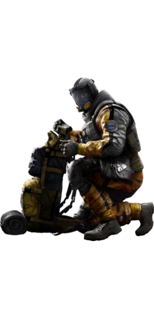

Rainbow 6® Siege est un FPS développé par les studios Ubisoft.
Il est présenté lors de l’E3 2013 et sortira finalement le 1er décembre 2015.
Dans ce jeu, les joueurs incarnent les membres d’une unité d'élite: Rainbow Six, composé des meilleures unités des forces spéciales.
Il y a actuellement 33 agents depuis la saison 3 “Blood Orchid” de la deuxième année.
Le jeu se joue sous forme de parties décomposées en manches, dans des environnements fermés, comme une maison, un consulat ou une banque.
Deux équipes de 5 joueurs s’y affrontent pour le contrôle d’un objectif. L'une attaque quand l'autre défend, et vice-versa.
Dans une partie, quel que soit le mode de jeu, chaque joueur choisit un agent possédant un gadget unique qui peut lui donner l'avantage s'il est bien géré et que le terrain s'y prête. Les agents ne sont pas les mêmes en attaque et en défense, puisque la stratégie de jeu n'est pas la même.
Les défenseurs ont la possibilité de poser des barricades sur les ports et fenêtres, des barbelés au sol, de renforcer des murs avec un blindage, et doivent défendre leur objectif jusqu'à la fin du temps imparti ou éliminer toute l'équipe adverse.
Les attaquants, eux, disposent de drones leur permettant de localiser leur objectif, et doivent le capturer ou éliminer l'escouade ennemie en s'aidant d'explosifs pour faire des brèches dans les murs.
Dans ce jeu, les personnages s'achètent avec une monnaie s'obtenant au fil des parties, pour un prix différent après chaque achat.
Il est aussi possible de jouer en coopération dans des parties de chasse au terroriste ou de s'entraîner en solo à travers dix scénarios, le but de la chasse au terroriste et des scénarios étant de tuer tous les bots ennemis, d'extraire un otage ou de désamorcer une bombe.
Dans ce jeu l’environnement joue un rôle très important, car étant destructible, il permet à la fois la création de nouvelle ligne de tir pour les défenseurs ainsi que la création de nouvelle entrées pour les attaquants.
|
|
|
|
Frost |
|
|
| Blackbeard | Valkyrie |
|
|
| Capitão | Caveira |
|
|
| Hibana |
|
|
|
|
|
Mira |
|
|
| Ying | Lesion |
GROM |
|
|
|
Ela |
|
|
| Dokkaebi | Vigil |
|
|||||
|  |

|
||||
| Lion | Finka | ||||
|
|||||
| Alibi |
|
||||

|
||
| Avion Présidentiel | Banque | Café Dostojewski |
| Canal | Chalet | Club House |
| Consulat | Favela | Frontière |
| Gratte-Ciel | Base d'Hereford | Maison |
| Oregon | Université Bartlett | Yacht |
| Littoral | Tour |

G52
Célèbre pour sa tendance à utiliser l'humour afin de détendre l'atmosphère, Elias Kötz transporte un appareil peu commun en mission : un bouclier anti-émeute équipé de grenades flash capables d'étourdir les ennemis tout en restant protégé. Blitz est très efficace en première ligne : avec son bouclier Flash, il peut aveugler les cibles à portée qui regardent dans sa direction, ce qui les rend vulnérables aux tirs des alliés qui l'accompagnent.

ERC-7
Chul Kyung Hwa n'a pas beaucoup de souvenirs de son enfance, seulement qu'il est issu d'une famille de réfugiés qui avaient fui à travers l'Asie. Il se souvient que son frère aîné s'est noyé en traversant une rivière, de sa mère malade, laissée derrière lors de la traversée de la jungle et de son père qui lui disait de ne pas pleurer et de ne pas faire de bruit pour ne pas alerter les patrouilles armées. Ils trouvèrent asile en Corée du Sud, mais la vie qui les attendait là-bas s'est avérée très éloignée de leurs rêves. Le poids de la culpabilité eut raison de son père, qui se suicida. Chul Kyung fut adopté par la famille Hwa, qui pensait qu'il serait mieux pour lui d'oublier son passé, y compris son nom. Chul Kyung se montra reconnaissant envers la Corée du Sud, son pays d'adoption ; il s'enrôla dans la Marine et devint un matelot exemplaire. Il gagna son poste au sein des UDT/NAVY SEAL, réussissant non seulement la formation haut la main, mais faisant preuve de telles qualités à son nouveau poste qu'il fut sélectionné pour intégrer le 707th SMB.
 GIGN
GIGN S.A.S.
S.A.S. FBI SWAT
FBI SWAT

 GSG 9
GSG 9 Spetsnaz
Spetsnaz JTF2
JTF2 BOPE
BOPE S.A.T.
S.A.T. G.E.O.
G.E.O. S.D.U.
S.D.U. 707th SMB
707th SMB G.I.S
G.I.S